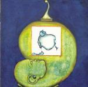

| Artist: | Deus Ex Machina |
| Title: | Cinque |
| Label: | Cuneiform RUNE 159 |
| Length(s): | 70 minutes |
| Year(s) of release: | 2002 |
| Month of review: | [09/2002] |
| 1) | Convolutus | 7.18 |
| 2) | Rhinoceros | 8.19 |
| 3) | Uomo Del Futuro Passato | 8.42 |
| 4) | Olim Sol Rogavit Terrami | 5.04 |
| 5) | Il Pensiero Che Porta Alle Cose Importanti | 7.28 |
| 6) | Luce | 6.19 |
| 7) | De Ordinis Ratione | 6.55 |
| 8) | Olim Sol Rogavit Terram II | 8.10 |
All sound samples from Cinque appear here by permission of Cuneiform Records.
Rhinoceros is a different take opening with keyboards and something akin to Hammond organ, but used in a rather strange fashion, sounding very hollow. The music here is more free form, a bit jazzy and sounding improvised. Then the organ sets in for something more potent with dissonants abounding and the rhythm section light footed. Then Piras takes the lead again with his voice this time going a bit higher than previous, in between we here some Emersonian organ, but also some squeak-and-squeez on the keyboards. Notwithstanding, the sometimes quite meandering feel to the music, it happens to sound natural and in the presence of good melodic leads on the guitar, the band comes close to a more jazzy variant on King Crimson.
The jazziness is even more apparent on Uomo Del Futuro Passato, where we also find that typical Fender Rhodes sound. It is also a bit less heavy than the previous songs. On Olim Sol Rogavit Terrami, the band goes for the acoustic instead, sometimes strumming, sometimes sparse, over which Piras sparingly his expressive vocals. Later, a slide guitar adds a definite western twang to the affair. Quite a long track for acoustics only, later the music gets to be quite involved, and we get two guitars, one strumming, one doing the fast fingerpicking lead.
Behind the lengthy title, Il Pensiero Che Porta Alle Cose Importanti, we find the violin returning for song that is filled with the tension of the great Crim, but also overripe Hammond solo's waiting to be picked and eaten. The main differences with King Crimson are probably the jazziness of the whole affair and the likeliness of Deus Ex Machina to fiddle about in the middle.
On Luce, it is positively the softly wailing violin that dominates, the acoustic guitar strumming in a question and answer game with the former. This track is hence on the acoustic side again, with a bluesy gait and quite a bit of tenseness.
After this acoustic track, De Ordinis Ratione signifies a return to the angularity of King Crimson in the guitar playing, but also the Hammond organ returns in full (not as over the top as Japanese bands mind you). In this song, one can admire all the twists and turns the bands makes. I have to admit tho' that the vocalists vocal melodies sound very much the same: the variety in melody comes more from the guitarist and less so the keyboardist. Because the role of the guitarist is not that dominant, the melodic side of the band easily gets snowed under. In the second half of this track however, the guitarist takes his turn meandering through the different passages, visiting some very Crimsonesque areas.
Olim Sol Rogavit Terram II is almost classical chamber music, with plenty of string instruments, but all in a very moody and wailing form. The soulful understated vocals of Piras add to the slow ponderous feel that pervades this track. A lament. Halfway, the music gets to be really sparse, with occassional notes, but soon the music builds up again, continuing to stay light and acoustic though. This final track also includes 12 minutes of muddy sounding bonus fragments of Deus Ex Machina in the studio.